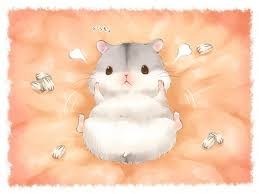
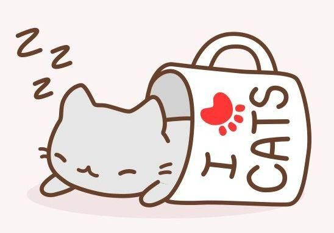
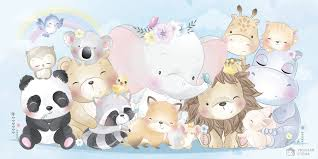

Дома́шние живо́тные — животные, которые были одомашнены человеком разумным и которых он содержит, предоставляя им кров и пищу. Они приносят ему пользу либо как источник материальных благ и услуг,либо как животные-компаньоны, скрашивающие его досуг. Множество домашних животных легко размножаются. Проводя селекцию, человек может контролировать их размножение и признаки, которые они передают своему потомству. Следует учитывать, что животные одной и той же породы могут нередко использоваться в различных целях. Например, кто-то разводит кроликов для заготовки мяса и меха, а кто-то держит кролика дома как любимчика. Некоторые отходы жизнедеятельности животного-компаньона можно использовать в качестве незначительного производственного сырья. Так, от длинношёрстной собаки, а также кошки или кролика, можно собирать некоторое количество шерсти и использовать для вязки тёплой одежды для себя или членов семьи. Перья домашних птиц используют для декоративных поделок и изобразительного искусства. Аквариумные рыбы Домашние животные могут содержаться в специальных помещениях (скотный двор, конюшня, собачья будка), но могут жить и непосредственно в доме человека. Из тех животных, которые живут в доме, одних содержат в клетках, аквариумах, террариумах и других «домиках», а другим (например, кошкам, собакам, кроликам) разрешают свободно перемещаться по помещению.Домашние животные в развитых странах питаются, в основном, коммерчески созданными кормами из специально подобранных компонентов. Это комбикорма для сельскохозяйственных животных, кошачьи или собачьи корма. Данные корма не только удобны в использовании, но и обеспечивают животное всеми необходимыми веществами. Однако для ряда домашних животных, в частности большинства земноводных и рептилий, такие корма не подходят. Их рацион в домашних условиях должен быть максимально приближен к естественному. Кроме домашних животных в доме могут находиться и нежелательные жильцы — домовые животные. Они селятся в жильё или около жилья человека без приглашения, не принося никакой пользы и подчас доставляя много вреда. Это, например, крысы, мыши, тараканы, муравьи, дикие кошки. Домовые животные входят в более обширную группу синантропных животных, обитающих вблизи жилища человека.



